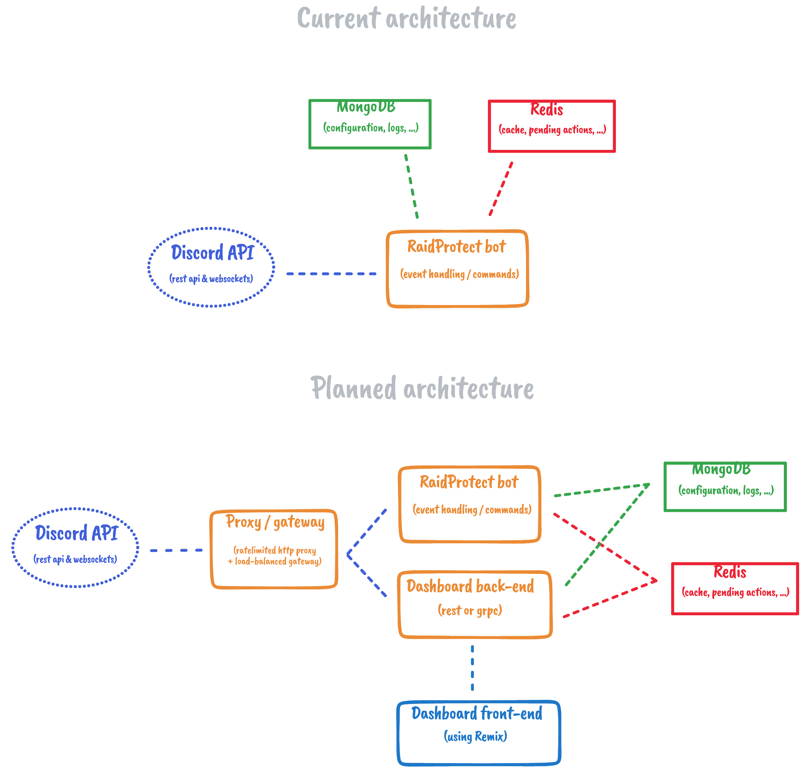

RaidProtect architecture
The RaidProtect is quite simple and monolithic, built on top of open-source technologies. The following page explains how the multiple components works together and where they are located in the codebase.
The following architecture includes the web dashboard, which is a planned feature. It is not yet implemented, so expect the current architecture to be a bit different.

Schema made with tldraw. Download source
Main services
- RaidProtect: The main service,
who host the bot and handles the communication with the Discord API, such as
event handling. It is located in the
raidprotectcrate of theraidprotect/raidprotectrepo.
Planned services
The following services haven't been implemented yet, but are planned to be added in the future. Their architecture is a draft and will probably change.
- Dashboard Backend: The web dashboard uses a separate backend to retrieve data from the databases or the Discord API.
- Dashboard Frontend: Actual plans for the dashboard front-end is to build a Remix (React) web application hosted on CloudFlare Workers.
- Discord proxy/gateway: To make the bot works in a cluster, we need a ratelimited proxy for the Discord REST API, and a load-balancing gateway for the Discord WebSocket API.
Databases
RaidProtect actually relies on two open-source databases:
- MongoDB: storage of permanent data, such as servers configuration and moderation logs.
- Redis: used to cache the Discord objects (guilds, channels, roles, ...) and the pending actions of the bot.
Frameworks and libraries
Here is a non-exhaustive list of the frameworks and libraries used by the various components of the bot.